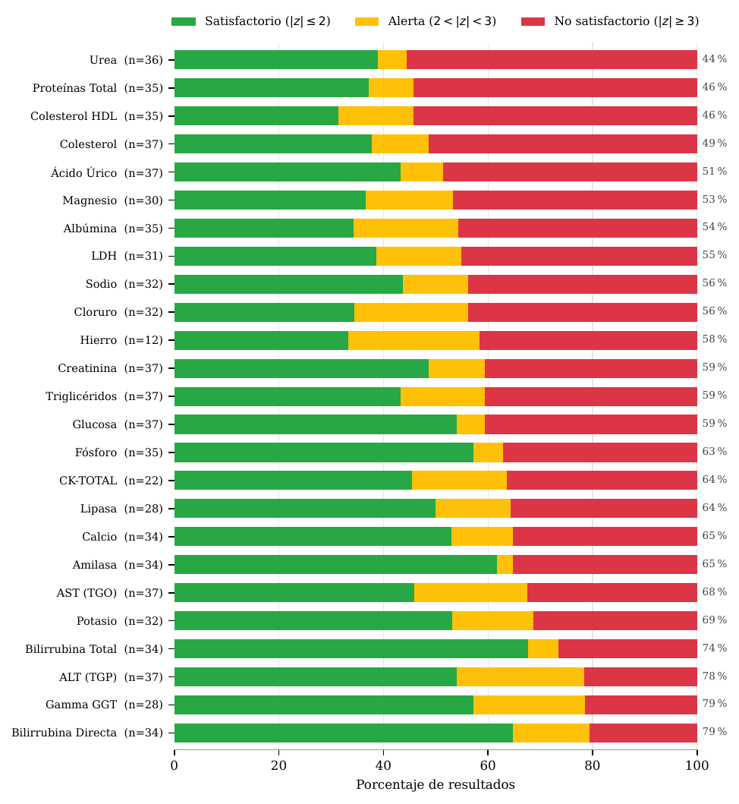

Un equipo de investigadores de la UASD, de las áreas de Bioanálisis y Matemática, evaluó 818 resultados de química clínica de 37 laboratorios dominicanos frente a criterios internacionales de error total permitido. Solo uno de los 37 cumplió el criterio en todos sus analitos.
El estudio, titulado Analytical performance in clinical chemistry: an observational study of 37 Dominican clinical laboratories against international total allowable error specifications, está disponible como preprint en ResearchGate. Analiza la ronda EA-001-2026 de un programa universitario de ensayos de aptitud, la primera calificada con los criterios de CLIA (Clinical Laboratory Improvement Amendments), la regulación federal estadounidense de laboratorios clínicos.
Por qué importa
Muchos diagnósticos se deciden comparando una cifra con un umbral fijo: la glucosa define si una persona es diabética, la creatinina ajusta dosis de medicamentos y el colesterol decide si se indica tratamiento preventivo. Un laboratorio con un sesgo constante no se equivoca con un paciente: reclasifica a una fracción de todos los que atiende, con falsos positivos que llevan a tratamientos innecesarios y falsos negativos que retrasan los necesarios.
El control interno del laboratorio no detecta este problema, porque verifica que el equipo repita el mismo valor, no que ese valor sea el verdadero. Para eso hace falta una evaluación externa: un proveedor independiente envía el mismo suero a todos los participantes y compara cada resultado con un valor de referencia.
La matemática detrás de la evaluación
El valor asignado de cada analito (X*) se estimó con una media robusta (Algoritmo A de la norma ISO 13528:2022), que limita iterativamente la influencia de los valores extremos. Cada resultado se calificó con un puntaje z, en el que la desviación de referencia no sale de la dispersión del grupo, sino del error total permitido (ETa) que fija CLIA para cada analito:
Así, |z| = 3 equivale exactamente al límite clínicamente aceptable. Los resultados se clasificaron como satisfactorios (|z| ≤ 2), en alerta (2 < |z| < 3) o no satisfactorios (|z| ≥ 3). Usar un límite fijo, y no la dispersión del grupo, evita que un conjunto disperso se fabrique una ventana de aceptación tan ancha que casi todos queden dentro.
Resultados clave
- Otro 13.4 % de los resultados quedó en alerta: dentro del límite, pero cerca de él.
- 34 laboratorios (91.9 %) acumularon tres o más no conformidades; la mediana fue de 8 por laboratorio.
- Seis laboratorios concentraron el 34.6 % de las no conformidades, pero el resto se repartió entre casi todos los participantes: no es un problema de unos pocos laboratorios atípicos.
- Ningún analito superó el 79.4 % de resultados dentro del criterio (bilirrubina directa); el más bajo fue la urea, con 44.4 %.
- En fosfatasa alcalina, LDH y GGT los resultados se separaron en dos grupos según la química del equipo (húmeda o seca); la fosfatasa alcalina se publicó sin calificación.

El contexto regulatorio
Los autores relacionan el patrón con el Decreto 350-04 (2004), que regula los laboratorios clínicos en el país. El reglamento encarga al director del laboratorio «tomar las iniciativas» para instalar programas de evaluación externa, pero no exige participar, no define qué desempeño es aceptable ni prevé consecuencias. En cambio, en Estados Unidos, México y Brasil la participación en ensayos de aptitud es obligatoria. Los autores proponen incorporarla como requisito de habilitación sanitaria.
Cómo leer estas cifras
El propio estudio advierte dos límites. Primero, la participación fue voluntaria: los 37 laboratorios representan cerca del 6.2 % de los 596 registrados por el Ministerio de Salud Pública, y no son una muestra representativa del país. Segundo, es una sola ronda; juzgar tendencias o a un laboratorio individual requiere rondas periódicas. Por eso el hallazgo de mayor alcance no es el 39.6 %, sino que hoy el país no tiene información suficiente para conocer la exactitud de su red diagnóstica.
🎯 Conclusión
En estos 37 laboratorios, el desempeño frente a un criterio internacional resultó insuficiente de forma generalizada y no atribuible a un grupo reducido. Un ejemplo de cómo la estadística robusta y la metrología pueden aportar evidencia para mejorar la salud pública dominicana.
Autores y fuentes
Escuela de Bioanálisis: Mariolga Roques Ortiz y Magdalena Yvelisse Villar Diroche. Escuela de Matemática: Joel Abel Macea Selmo, Robert Antonio Muñoz Rivera y Gerior Eisenhower Féliz. Con la participación de Leonardo Andrés Rosario, ingeniero industrial experto en gestión de calidad de laboratorios clínicos.
Los autores forman parte del equipo del programa universitario de evaluación externa de la calidad que organizó la ronda, circunstancia que el artículo declara expresamente.